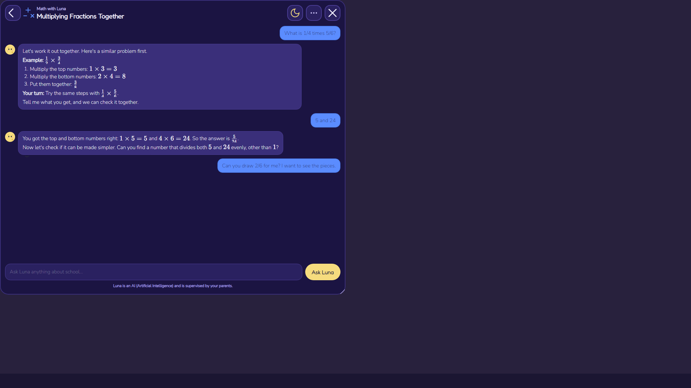
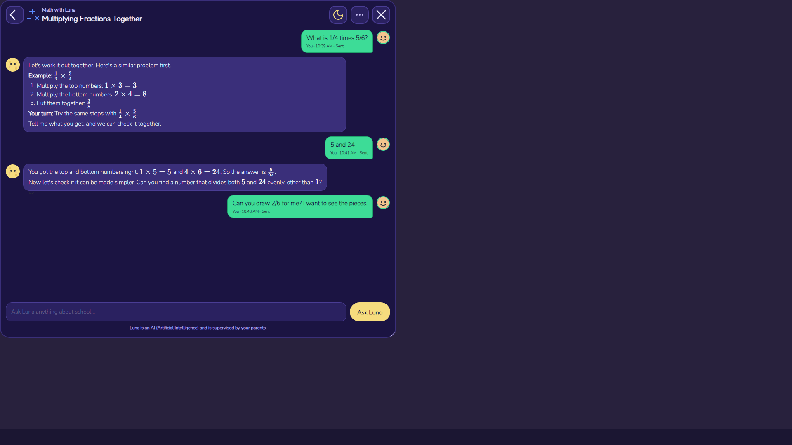
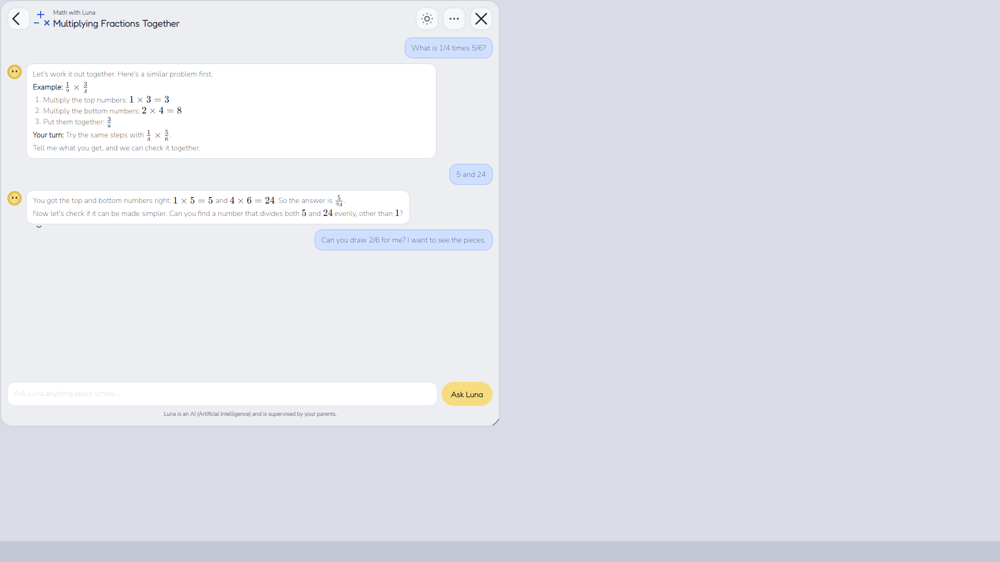
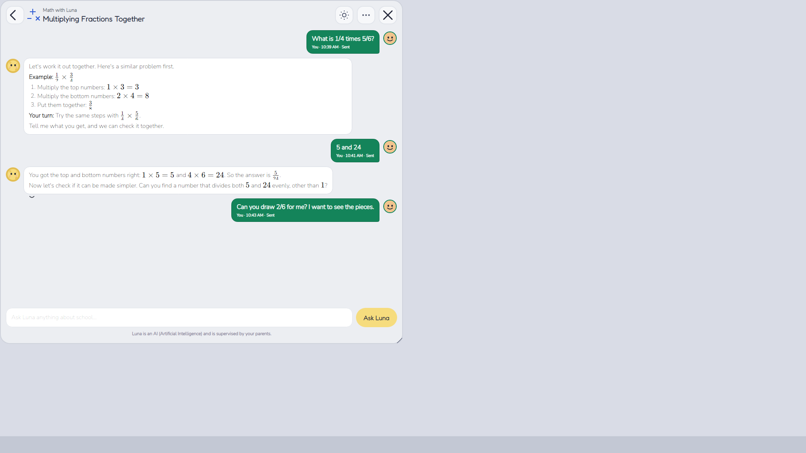
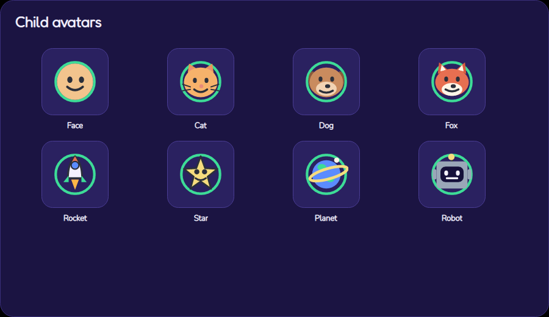
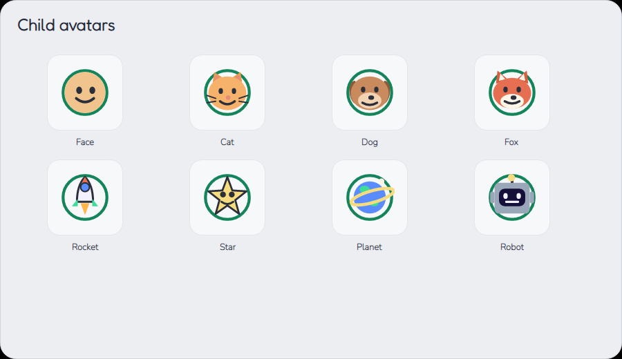

The “before” images are v0.17.7 (child bubbles in the subject blue, no avatar). The “after” images are
v0.17.8: mint-green child bubbles, the child’s chosen avatar on the right, and a readable
You · time · status line inside the bubble. Both themes are shown at the 960 px chat width.


#3ddc97 with #15103a text, avatar and meta line

#14845a with white text, avatar and meta line

Pictures are the real Avalonia renderer through headless Skia. The subject colour still appears in the header
icon, chat-list dots and math pictures. The avatar picker opens from the child’s avatar or the “…” menu and saves
the choice in %LOCALAPPDATA%\OpControlParental\kid-avatar.txt, next to the theme file.